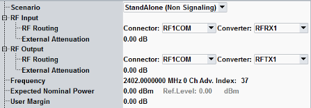
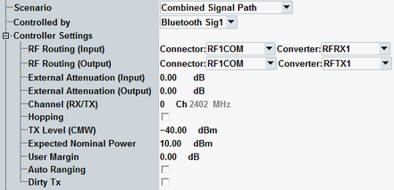

The measurement is configured using the parameters in the multi-evaluation configuration dialog. The following parameters configure the RF input path.
See also: "Connection Control (Measurements)"


- Standalone: provides you the non-signaling Bluetooth measurement, using all Bluetooth multi-evaluation settings.
- Combined signal path: allows you to use a "Bluetooth Signaling" application (options R&S CMW-KS60x/-KS61x/-KS721) in combination with Bluetooth multi-evaluation measurement. The signaling application is selected by the additional parameter "Controlled by". The signaling application settings of analyzer and signal routing are displayed in the "Controller Settings" node.
The parameters display values determined by the signaling application. The corresponding measurement settings are remembered in the background and displayed again when switching back to the standalone scenario.
After selecting softkey "Input Signal", additional test mode hotkeys provide some signaling parameters added to the measurement dialog for fast access.
Connection status information of the signaling application is displayed at the bottom of the measurement views. Softkeys and hotkeys provide access to the settings of the signaling application and allow to switch the downlink signal on or off, see "Additional Softkeys and Hotkeys".
For additional information, see "Parallel Signaling and Measurement".
Selects the input path for the measured RF signal, i.e. the input connector and the RX module to be used.
In the standalone (SA) scenario, these parameters are controlled by the measurement. In the combined signal path (CSP) scenario, they are controlled by the signaling application.
Defines the value of an external attenuation (or gain, if the value is negative) in the input path. The power readings of the R&S CMW are corrected by the external attenuation value.
The external attenuation value is also used in the calculation of the maximum input power that the R&S CMW can measure.
If a correction table for frequency-dependent attenuation is active for the chosen connector, then the table name and a button are displayed. Press the button to display the table entries.
In the standalone (SA) scenario, this parameter is controlled by the measurement. In the combined signal path (CSP) scenario, it is controlled by the signaling application.
Selects the output path for the generated RF signal, i.e. the output connector and the Tx module to be used for ARB files.
Depending on your hardware configuration, there are dependencies between both parameters. Select the RF connector first. The "Converter" parameter offers only values compatible with the selected RF connector.
Option R&S CMW-KD611 is required (only for R&S CMW100/CMW with MUA).
Remote command:Defines the value of an external attenuation (or gain, if the value is negative) in the output path. With an external attenuation of x dB, the power of the generated signal is increased by x dB. The actual generated levels are equal to the displayed values plus the external attenuation.
If a correction table for frequency-dependent attenuation is active for the chosen connector, then the table name and a button are displayed. Press the button to display the table entries.
In the standalone (SA) scenario, this parameter is controlled by the measurement. In the combined signal path (CSP) scenario, it is controlled by the signaling application.
Option R&S CMW-KD611 is required (only for R&S CMW100/CMW with MUA).
Remote command:Selects the Tx connectors of a connector bench to broadcast waveform ARB signal.
This node is visible if you select a connector bench with several connectors. The availability of connector benches depends on the instrument model.
Option R&S CMW-KD611 is required (only for R&S CMW100/CMW with MUA).
Remote command:Center frequency of the RF analyzer. Set this frequency to the frequency of the measured RF signal to obtain a meaningful measurement result.
You can use either frequencies or channel numbers to define the analyzer frequency. For LE advertiser packets, also the advertiser index can be specified, see also "LE: Channels".
In the standalone (SA) scenario, these parameters are controlled by the measurement. In the combined signal path (CSP) scenario, they are controlled by the signaling application.
Hopping is only supported in the combined signal path (CSP) scenario. It is controlled by the signaling application.
- Signaling: Option R&S CMW-KS600 for basic signaling with BR/EDR
Measurement: R&S CMW-KM610
- Signaling: Option R&S CMW-KS610 for BR/EDR test mode.
Measurement: R&S CMW-KM610
If the Bluetooth signaling operates in hopping mode, the frequencies and channels set in the "Bluetooth Measurement" application are ignored. Measure mode specifies whether the "Bluetooth Measurement" measures all channels or only the specified single channel ("Measure Channel").
The selection of measure channel is only relevant for BR/EDR test mode connections.
Remote command:Defines the absolute TX level of the R&S CMW signal.
This parameter is available in the combined signal path (CSP) scenario only. It is controlled by the signaling application.
Remote command:Sets the analyzer in accordance with the nominal power of the RF signal to be measured. The nominal power is the average output power at the EUT during the measurement intervals where the RF transmitter is on. The "Ref. Level" is calculated as the expected peak power at the output of the EUT:
Reference level = Expected Nominal Power + User Margin
The actual input power at the connectors must be within the level range of the selected RF input connector. If all power settings are configured correctly, it is calculated as the "Reference Level" minus the "External Attenuation (Input)" value. Refer to the data sheet.
Auto ranging adjusts the input level expected at the R&S CMW antenna automatically. If enabled, the manual setting of expected nominal power is ignored.
In the standalone (SA) scenario, this parameter is controlled by the measurement. In the combined signal path (CSP) scenario, it is controlled by the signaling application.
Margin that the R&S CMW adds to the "Expected Nominal Power" to determine its reference power ("Ref. Level"). The "User Margin" is typically used to account for the known variations of the RF input signal power, e.g. the variations due to a specific channel configuration.
A user margin of 3 dB is appropriate for the supported packet types.
In the standalone (SA) scenario, this parameter is controlled by the measurement. In the combined signal path (CSP) scenario, it is controlled by the signaling application.
Enables/disables dirty transmitter.
This parameter is available in the combined signal path (CSP) scenario only. It is controlled by the signaling application.
Remote command: